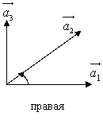
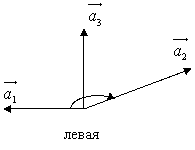

4.6. Векторное произведение векторов. Определение. Алгебраические свойства.
Геометрические приложения. Выражение через декартовы координаты сомножителей
Упорядоченная тройка некомпланарных векторов , приведенных к одному началу, называется
правой, если из конца третьего вектора кратчайший
поворот первого вектора  ко второму
ко второму  виден совершаемым против часовой
стрелки. В противном случае тройка называется левой.
виден совершаемым против часовой
стрелки. В противном случае тройка называется левой.
ко второму виден совершаемым против часовой
стрелки. В противном случае тройка называется левой.
В дальнейшем мы будем рассматривать только правые системы
координат.
При перестановке местами двух соседних векторов ориентация
тройки меняется. Если тройки  , , –
правые, то , , – левые. При круговой (циклической)
перестановке векторов ориентация тройки не меняется.
, , –
правые, то , , – левые. При круговой (циклической)
перестановке векторов ориентация тройки не меняется.
, , –
правые, то , , – левые. При круговой (циклической)
перестановке векторов ориентация тройки не меняется.